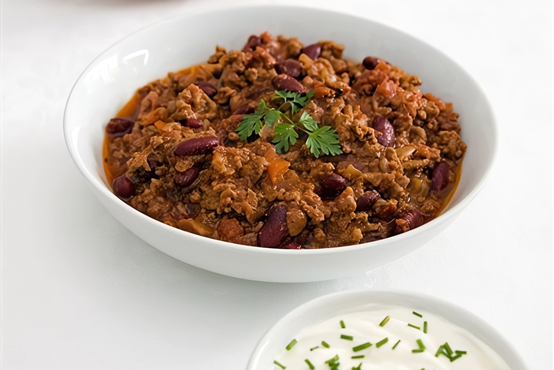
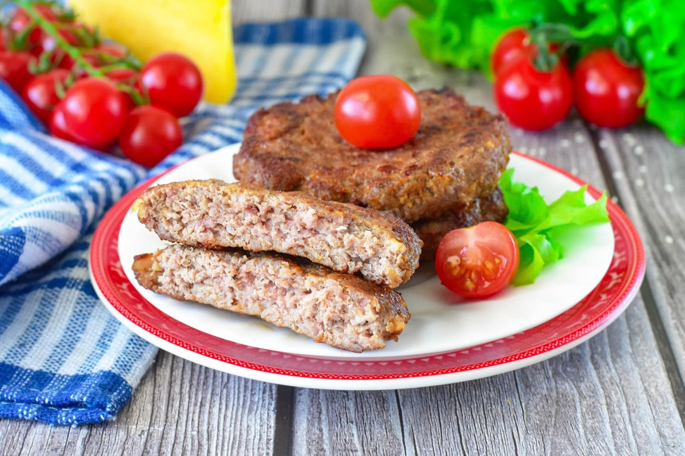
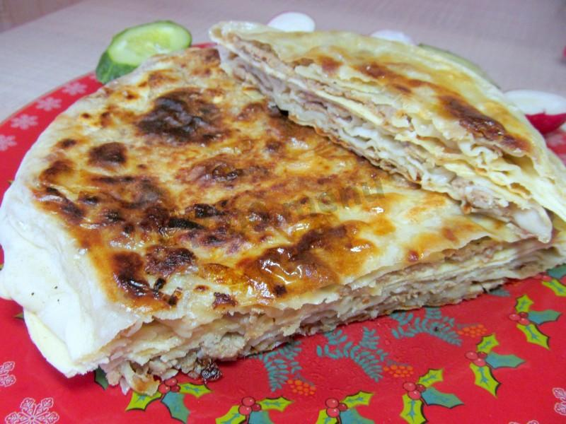
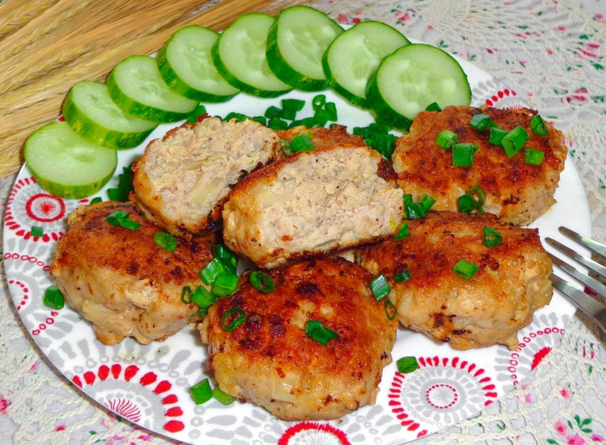

| # | название блюда | оценка от 1 до 10 | ссылка на рецепт | фото блюда |
|---|---|---|---|---|
| 1 | МЯСНОЙ ФАРШ С ЧИЛИ | 8 баллов |  | МЯСНОЙ ФАРШ С ЧИЛИ |
| 2 | ФАРШ С СЫРОМ | 7 баллов |  | ФАРШ С СЫРОМ |
| 3 | МАКАРОНЫ ПО ФЛОТСКИ С ФАРШЕМ НА СКОВОРОДЕ КЛАССИЧЕСКИЕ | 6 баллов | МАКАРОНЫ ПО ФЛОТСКИ С ФАРШЕМ НА СКОВОРОДЕ КЛАССИЧЕСКИЕ | |
| 4 | ЛЕПЕШКИ С ФАРШЕМ НА СКОВОРОДЕ | 9 баллов |  | ЛЕПЕШКИ С ФАРШЕМ НА СКОВОРОДЕ |
| 5 | БИТОЧКИ МЯСНЫЕ НА СКОВОРОДЕ | 5 баллов | < | БИТОЧКИ МЯСНЫЕ НА СКОВОРОДЕ |